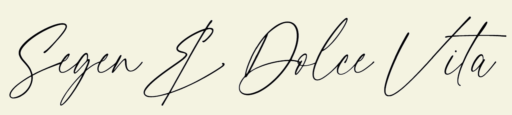
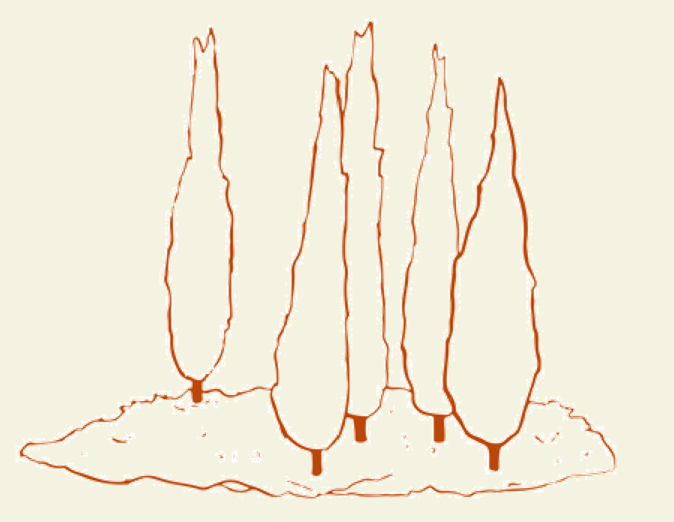
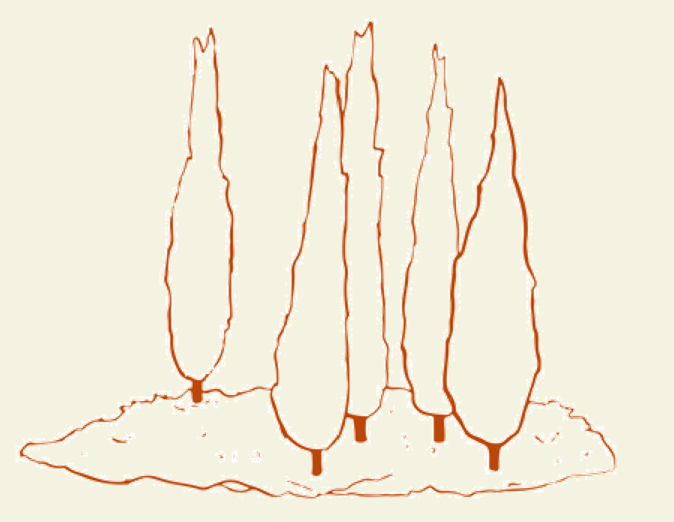
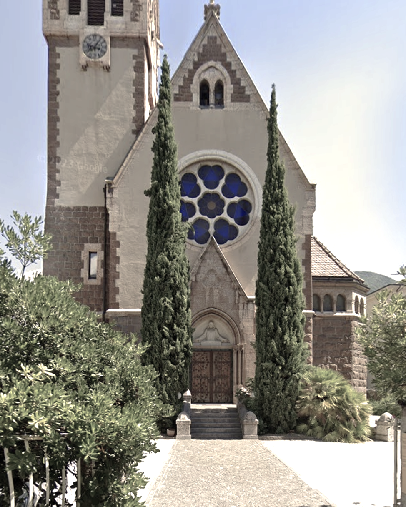
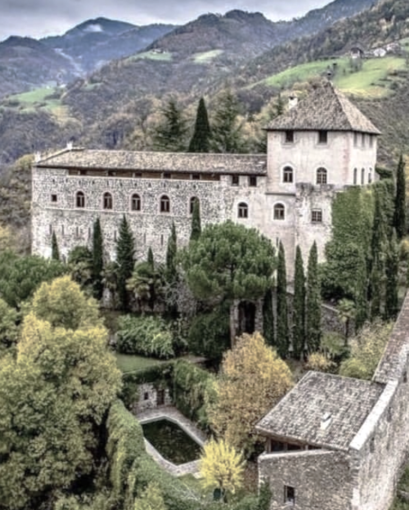
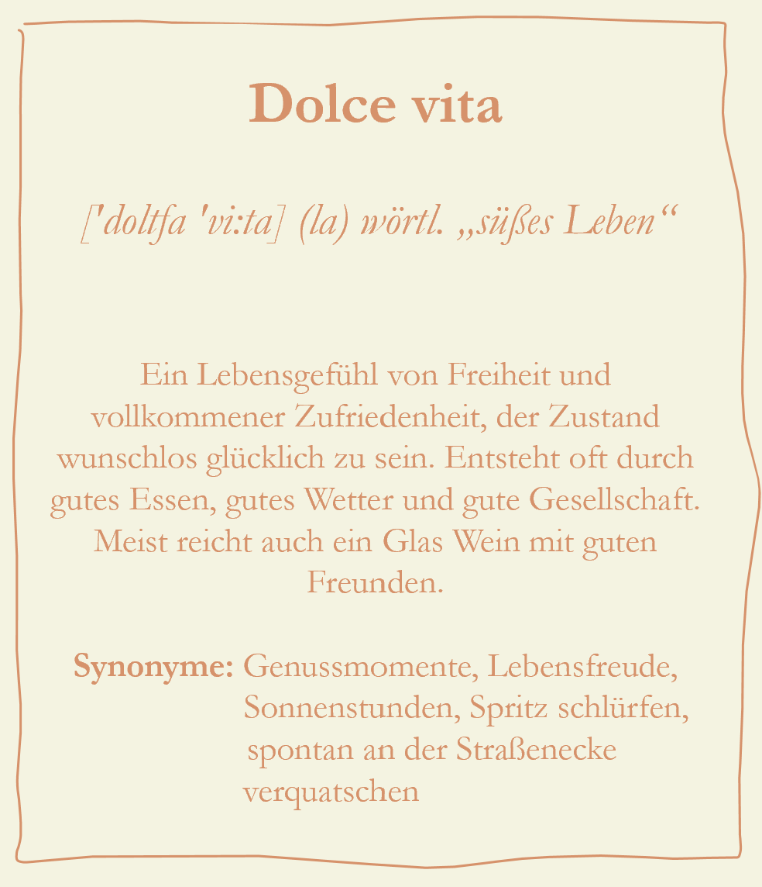
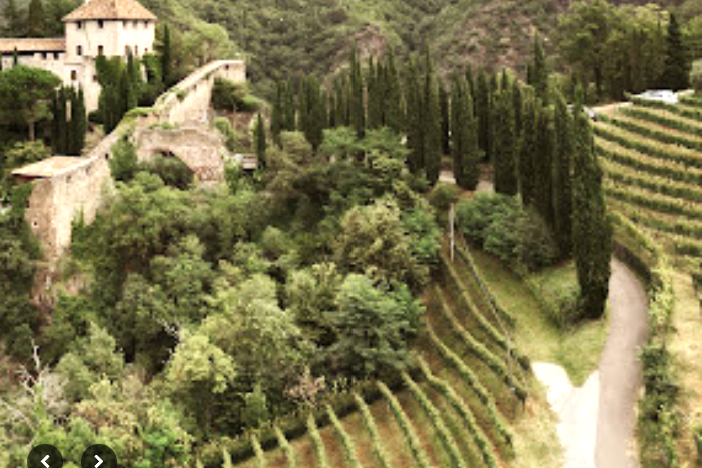
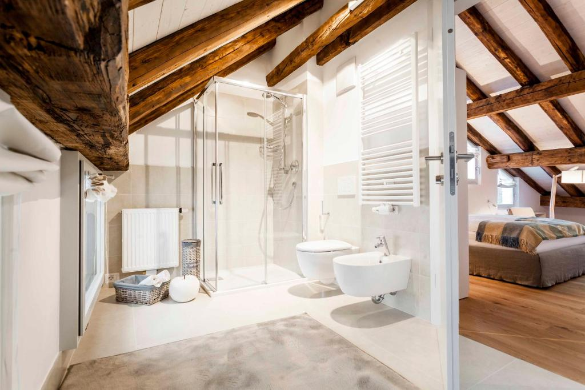

Wir Heiraten
und das ist ein Grund zum Feiern - am liebsten mit euch!

und das ist ein Grund zum Feiern - am liebsten mit euch!
Wir lassen uns kirchlich trauen und feiern dazu einen Gottesdienst in der evangelischen Kirche in Bozen.
Für das Get-Together am Freitag und die Feier am Samstag sind wir auf dem Schloss Wangen-Bellermont bei Bozen.

Und jetzt nochmal im Detail
Am Freitag ist Dolce Vita angesagt. (Okay, am Samstag auch... aber am Freitag starten wir schon mal ganz entspannt.)
Wir freuen uns auf ein lockeres Beisammensein, bei dem ihr euch kennenlernen oder einfach eine Runde in den Pool springen könnt.
Also packt eure Badehose ein!
Für den kleinen oder großen Hunger könnt ihr euch eine Pizza bestellen, und auch kühle Getränke stehen auf der Karte.
Um das Wochenende gebührend einzuläuten, laden wir euch auf ein erstes Aperitifgetränk ein.🍷
Wer Lust hat, kann den Abend auch mitgestalten: Es gibt eine kleine Open Stage! Jam Sessions, alte Geschichten oder spontane Gesangseinlagen -
alles kann, aber nichts muss. Talentierte Musiker und Musikerinnen zur Begleitung findet ihr unter den Gästen :)
Dresscode: Zieht einfach an, worin ihr euch wohlfühlt – ganz locker und ungezwungen. Weiß ist auch erlaubt, ganz wie ihr mögt.
Um potenziellem Stress am Tag unserer Trauung den Raum zu nehmen, begrüßen wir den Samstag mit einer optionalen Yoga Session am Pool um 9:30 Uhr.🧘♀️
Danke Marie, dass du uns dabei anleitest! Solltet ihr Interesse haben, wäre es sinnvoll, eine Yogamatte mitzubringen.
Wenn ihr zur Trauung kommen wollt, seid am besten um 14:45 Uhr in der Kirche. Nach der Trauung fahren wir direkt zum Schloss. Weil es oben am Schloss wenig Parkplätze gibt
haben wir mit denen, die oben parken wollen eine Vereinbarung zum shutteln getroffen.
Für das Essen versuchen wir so viele Lebensmittel wie möglich aus eigener Produktion oder mit bekannter Herkunft zu verwenden. Solltet ihr vegetarisch
oder vegan essen wollen, sagt uns gerne schon Bescheid.
Nach dem Essen haben wir Zeit zum Feiern - bis die Wolken wieder lila sind.
Dresscode: Wir freuen uns über elegante Outfits oder solche mit einem Hauch sommerlicher Leichtigkeit.
Denkbar ist zB alles zwischen Leinenanzug, Sommerkleid und stilvollem „La Dolce Vita“-Look.

Wer am Sonntag nicht zu verkatert ist oder noch nicht bereit ist, sich vom schönen Südtirol zu verabschieden, kann optional in der Luna Mondschein Bar vorbeischauen. Wir lieben die Atmosphäre dort und haben für euch ein paar Tische reserviert. Jeder zahlt einfach das, was er bestellt.
Die Parkplätze an der Location sind sehr begrenzt - genau gesagt sind es 7.
Um hier Chaos zu vermeiden haben wir schon festgelegt, wer oben parken kann. Diese Personen werden nach der Trauung eine zweite Runde drehen, damit alle von der Kirche zur Location kommen.
Falls wir euch nicht angesprochen haben, könnt ihr entlang der Straße unten am Fluss , oder
an der Seilbahn Jenesien (12h) parken. Alternativ könnt ihr euch gerne auch nach einem
für euch passenden Parkplatz umschauen.
Kleiner Hinweis zur Fahrt zur Traung am Samstag:
Nutzt den Freitagabend gern, um euch für die Fahrt zur Trauung am Samstag abzusprechen.
Für alle Gäste, die in der Location übernachten, stehen ausreichend Plätze in den wenigen Autos zur Verfügung, die oben am Schloss parken.
Unsere Campenden bitten wir, sich untereinander zu koordinieren. Vielleicht kann jemand von euch sein Auto relativ einfach umbauen, oder es kann euch jemand aus dem Hotel aufsammeln –
Alternativ findet sich sicher auch ein Taxi. Für alle Abenteurer: Zur Kirche gehts 250hm bergab, und kleine Gefährte bekommt man beim Hochshutteln sicher auch in einen Kofferraum. ;)
Für alle Hotelgäste:
Nach der Feier am Samstag gibt es einen Shuttle, der wie folgt fährt:
Vor 02:00 Uhr auf Abruf
2:00 Uhr - 4:00 Uhr im Dauerbetrieb
nach 4:00 Uhr auf Abruf
Hier ist die Nummer des Shuttles: +39 347 657 1700 Wir hängen sie an der Location auch nochmal aus.
Bitte bedenkt, dass es bei den Fahrten auf Abruf zu Wartezeiten kommen kann.
Wir würden es lieben, wenn ihr alle direkt bei uns in der Location übernachten könntet.
Weil der Platz limitiert ist, haben wir zusätzlich für gemütliche Appartments in der Bozener Innenstadt gesorgt.
Um für jede:n die beste Übernachtungsmöglichkeit zu finden, haben wir uns schon viele Gedanken gemacht. Meldet euch bei uns,
damit wir unseren Vorschlag besprechen, und zusammen eine gute Lösung für alle finden können.
Für diejenigen, die außerhalb der Location übernachten, wird es einen Shuttle Service geben, um die Dinge einfacher zu machen.
Weil ihr extra für uns eine weite Reise auf euch nehmt, würden wir euch gerne auf die Übernachtungen von Freitag bis Sonntag einladen.
Natürlich könnt ihr euch auch immer noch selbst eine Unterkunft buchen, wenn das am besten in eure Pläne passt.
Hier nochmal eine Übersicht:
Es gibt unterschiedliche Stellplätze an der Location – manche besser befahrbar, weil geteert, und manche etwas schlechter, weil im Weinberg. Die nächsten Plätze sind die Parkplätze der Location, direkt vor der Tür. Um unsere Location herum fällt die Landschaft steil ab, weswegen ihr am besten 1-2 Keile einpackt, um in der Nacht gerade stehen zu können. Es wird ein Badezimmer in der Location geben, das ihr benutzen könnt. Details gibt es kurz vorher. 
Wir haben unterschiedliche gemütliche Appartments für euch reserviert, die meisten davon befinden sich im historischen Laubenhaus in der Bozener Innenstadt
und sind 4er Appartments. Neben den 4er Appartments gibt es sonst noch einige 6er und wenige 2er. Details zum Check-in und Frühstück folgen kurz vor der Feier.

Ihr habt euer eigenes Zweibettzimmer mit Bad direkt in der Location. Damit seid ihr immer direkt vor Ort und unterstützt uns seelisch und moralisch so gut ihr könnt
bei der Vorbereitung. Ihr seid okay mit lauter Musik im Raum unter euch, habt eine Schwäche für einen Ausblick in die grünen Hügel von Bozen und helft morgens
beim Aufräumen.

Unabhängig davon haben wir in der Location einen kleinen gemütlichen Schlafbereich für Kinder und Erwachsene eingerichtet – damit alle Aufpassenden die Feier in Ruhe genießen können, während die Kleinen in der Nähe schlafen. Außerdem dürft ihr gerne einige Betten in den Zimmern im oberen Geschoss der Location zwischennutzen, solange deren Bewohner noch am Feiern sind.


Übrigens findet ihr die Fotos von unserer Hochzeit im Nachhinein auch hier auf der Website verlinkt :)
Beiträge, in denen sich Kati fühlt als wäre sie der einzige Gast in einer Comedy-Show mit Live-Publikum, wären ein bisschen schlimm für sie. Falls ihr also einen Beitrag plant, meldet euch bitte bei Katis Trauzeugin Lisa. Sie behält den Überblick und koordiniert alle Beiträge. Hier nochmal ihre Nummer: +49 177 786 3987. Lisa schreiben

Meldet euch bitte bis Ende Februar mit folgenden Infos bei uns:
🐻 Ob und wenn ja, mit wie vielen Leuten ihr kommt
🐻 Wie ihr am liebsten Übernachten würdet
🐻 Ob ihr vegan/vegetarisch essen wollt.
Ihr könnt uns dazu ganz unkompliziert eine Nachricht per SMS oder auf WhatsApp schreiben.
Julian schreiben Kati schreiben